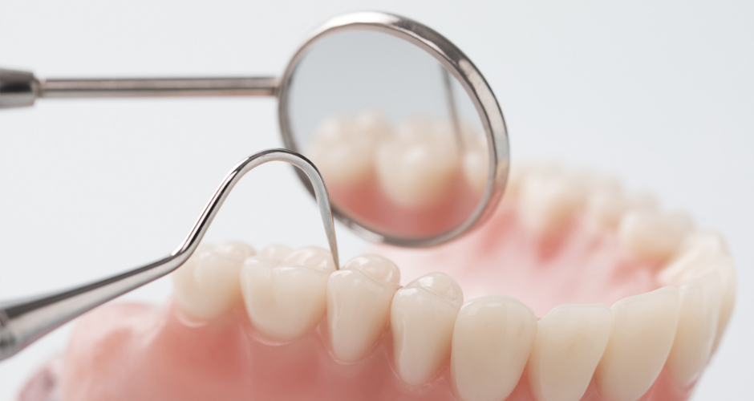
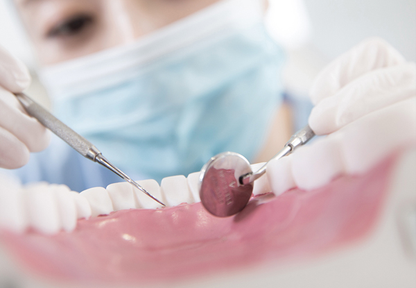
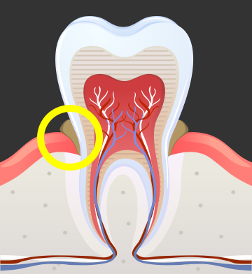
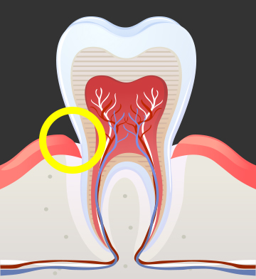

치석과 치태를 제거해
잇몸질환을 예방하는 치료를 진행합니다
<%=m_client_en%>
치주질환을 예방하는
치아 표면이나 잇몸 안에 붙어 있는 치석과 치태는 잇몸질환과 충치 유발의
원인이 되므로 주기적인 제거가 필요합니다.
이를 치과용 기구로 제거하는 시술을 스케일링이라고 합니다.

치아에 착색이나
치석이 있는 경우
치아 사이에
음식물이 잘 끼는 경우
흡연을 하거나
잇몸질환이 있는 경우
충치 등 구강질환을
미리 예방하고 싶은 경우

치석, 치면세균막, 음식물 찌꺼기 및 외인성 색소 등을 물리적으로 제거하고
거칠어진 치아 표면을 매끄럽게 하거나,
재부착을 방지하여 치아 뿐 아니라 잇몸까지 건강하게 만들어 줍니다.


스케일링은 보통 1년에 1번 이상 받는 것이 좋습니다.
양치질에 신경을 쓰지 못하거나 흡연을 하는 등
안 좋은 습관을 가진 경우라면 6개월 단위로 받는 것을 권합니다.
치아 구조와 구강 건강 상태는 개인차가 있으므로 담당 치과의사나 치위생사가 권하는 시기에 내원하는 것이 좋습니다.
매년 1월 1일부터 ~ 12월 31일까지
※ 개인에 따라 시술 및 수술 후 부작용이 발생할 수 있으니 사전에 의료진과 충분한 상담 후 치료를 진행하시기 바랍니다.